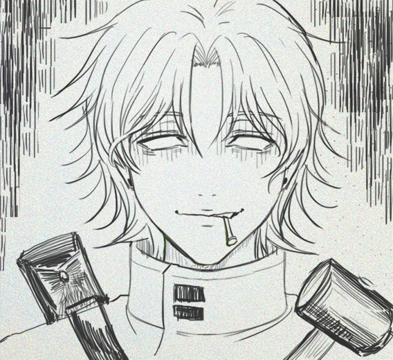
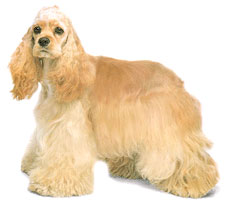
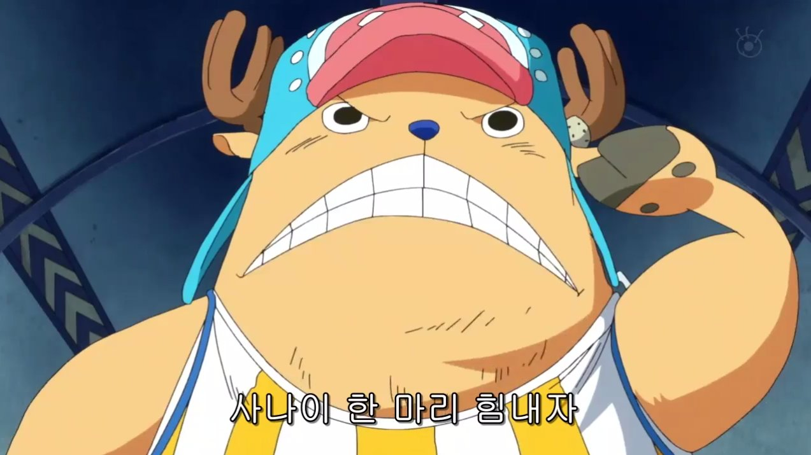
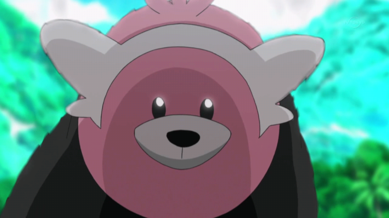
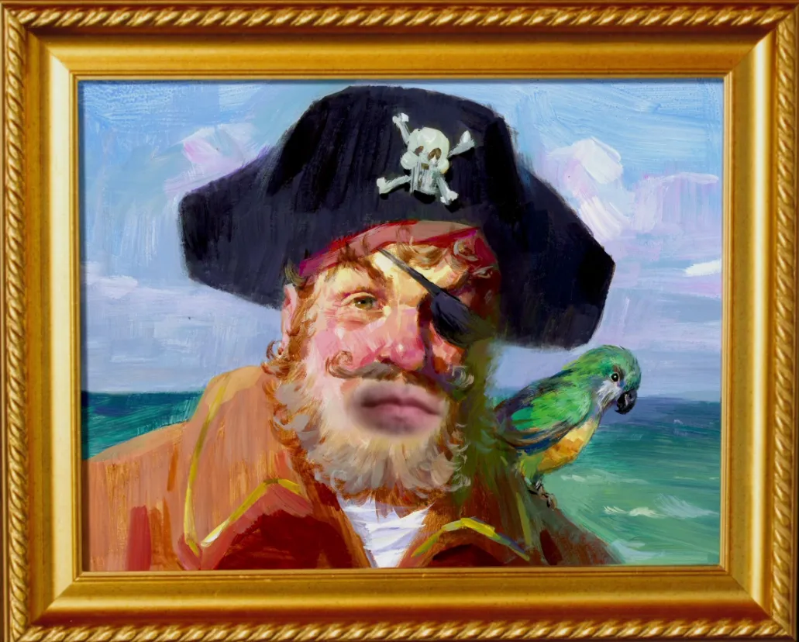
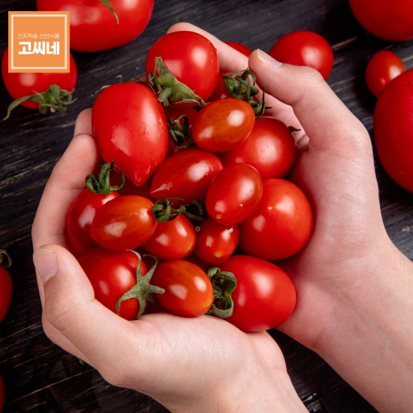

html로 금발을 덕질하는 법
~금발 사랑해요~
DND 속성으로 분류한 금발
금발이란 무엇인가
색상선
금색이어야 한다.
색상중립
노란색 계열이기만 하면 된다.
색상악
검은색만 아니면 된다.
형태선
머리에 난 털이어야 한다.
카인은 금발이다.
시로는 금발이다.

이토준지는 금발이다.
형태중립
털이기만 하면 된다.

노란털 개는 금발이다.

쵸파는 금발이다.

이븐곰은 금발이다.
형태악
몸에 붙어있기만 하면 된다.

버거수염은 금발이다.
응원솔은 금발이다.

토마토는 금발이다.